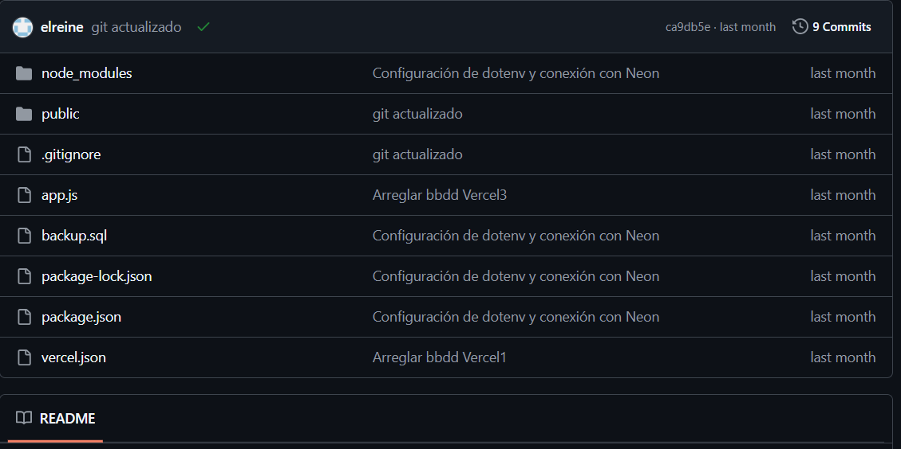
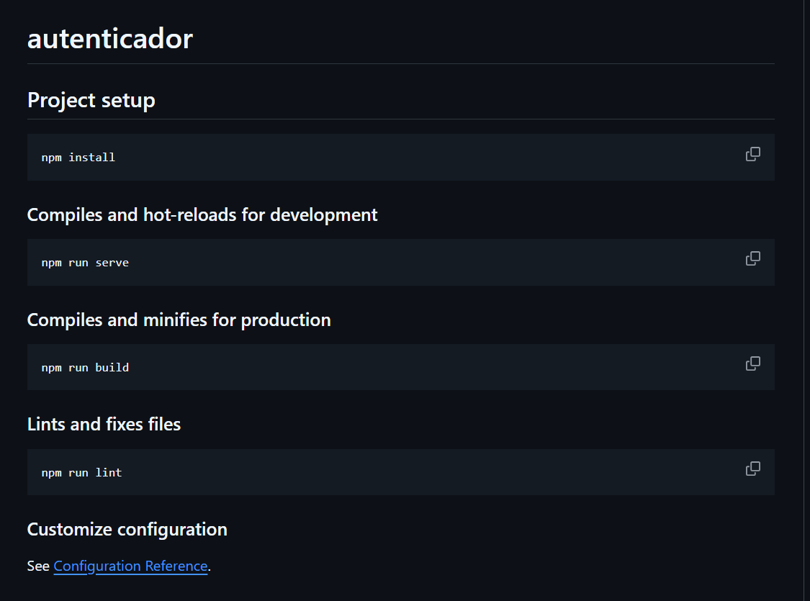

Sobre mí
Soy Reinel, un técnico en microinformática apasionado por la tecnología. Mis habilidades incluyen lenguajes como Python, JavaScript, y el uso de herramientas como Firebase y Vue.js. Me motiva enfrentar retos tecnológicos y aprender constantemente para ofrecer soluciones innovadoras y eficientes.
Habilidades
- Lenguajes de programación: Python, JavaScript
- Frameworks: Vue.js
- Bases de datos: SQL, Firebase, PostgreSQL
- Gestión de proyectos con Git y GitHub
- Conocimientos en Windows Server y máquinas virtuales
Proyectos

Proyecto SQL
Una aplicación web diseñada para la gestión de bases de datos SQL.
GitHub: github.com/elreine/empresasql

Autenticador
Sistema de autenticación seguro con validación y encriptación.
GitHub: github.com/elreine/Autenticadorv2
Contacto
Para cualquier consulta o propuesta, aquí están mis datos de contacto:
Email: reinelitosecundaria@gmail.com
GitHub: github.com/elreine
LinkedIn: linkedin.com/in/reinelg